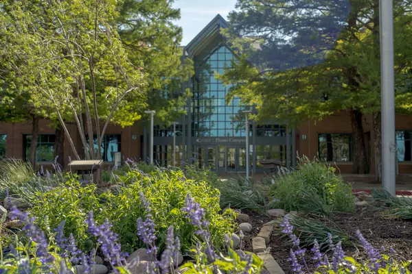
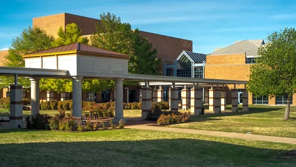
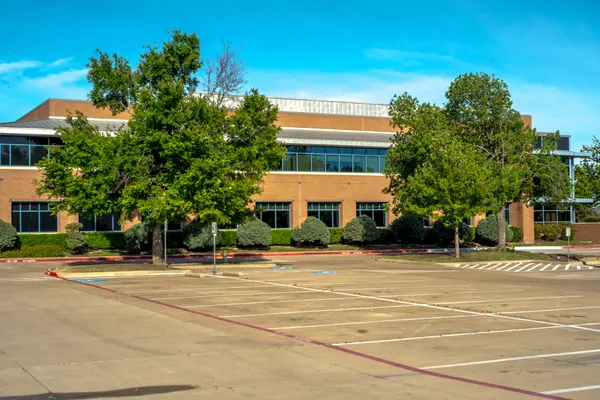
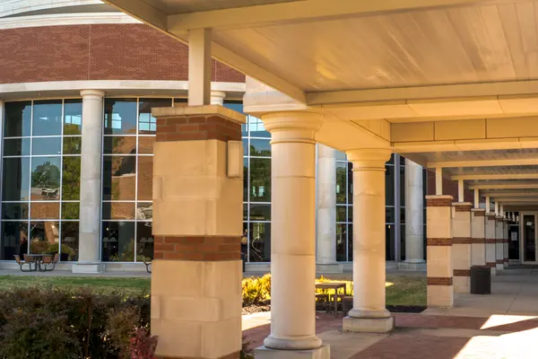
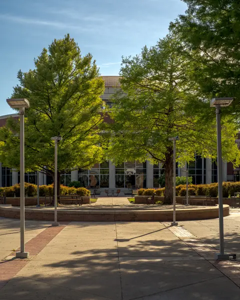
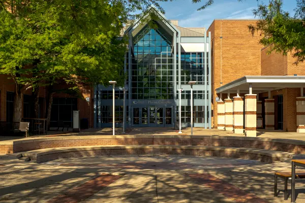

Campus Views
These images show the campus in a quieter state, with attention placed on buildings, walkways, entrances, and the overall visual character of the site.

Open Frontage
A wide exterior view emphasizes the scale of the building and the open space in front of it.

Covered Walkways
Covered paths and shared seating areas support movement, waiting, and short study breaks throughout the day.

Arrival and Access
Exterior access points and surrounding parking help shape the first impression of the campus experience.

Architectural Detail
Brick, glass, and curved forms give the campus a consistent visual identity across multiple buildings.

Quiet Courtyards
Landscaped exterior areas create transitions between academic buildings and provide visual relief from the built environment.

Entrances and Flow
Clear entrances and strong sightlines make the campus easier to navigate for students and visitors.
Campus Spaces and Quiet Study
One of the strengths of a community college campus is that it provides more than classrooms alone. Walkways, seating areas, building entrances, and shared public zones all contribute to how usable the campus feels over the course of a semester.
During Easter break, these areas appear in a more stripped-down state. Without the regular pace of traffic, the campus becomes easier to read as a designed space. The lines of the buildings, the distance between structures, and the relationship between shade, concrete, and landscaping become more visible.
For students, this matters in practical ways. A campus that is easy to move through and easy to occupy can support concentration, reduce friction, and make long days of coursework more manageable.
Why Community College Can Matter for Low-Income Students
Community colleges often serve students who need affordability, flexibility, and access to educational space without the cost structure of a larger university.
Lower Cost
Lower tuition can make it possible to continue working toward a degree without taking on the same level of financial pressure associated with other options.
Flexible Use of Space
A campus is not only a place to attend class. It can also function as a place to study, plan, wait between obligations, and access academic resources.
Practical Accessibility
Community colleges are often built around regular daily use, which makes physical layout, navigation, and general usability especially important.
About This Project
This website is an independent student project created for IMED 1341. All photographs used in the gallery were taken by Ryan McKevitt on campus during Easter break, when the grounds were less active than usual.
The purpose of the site is to present Collin College as a physical environment rather than only as a set of classes or services. By documenting the campus in a quieter period, the project highlights how architecture, layout, and atmosphere contribute to everyday academic life.
Project Details
- Course: IMED 1341
- Creator: Ryan McKevitt
- Date created: April 17, 2026
- Format: Single-page responsive Bootstrap site
Privacy Policy
This website is a student project and does not collect personal financial information or create user accounts. Any contact links, buttons, or interactive features included on the page are for demonstration purposes unless otherwise stated.
No purchases, registrations, or transactions are processed through this website. Images and written content are displayed for educational and presentation purposes related to the course assignment.
If this site is later hosted online, any standard hosting-related analytics or logs would be governed by the policies of the hosting provider.